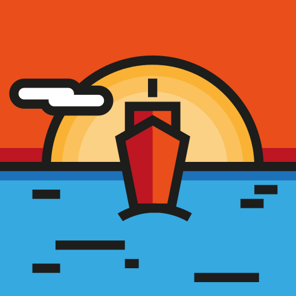
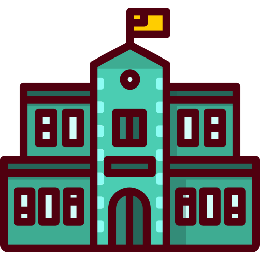
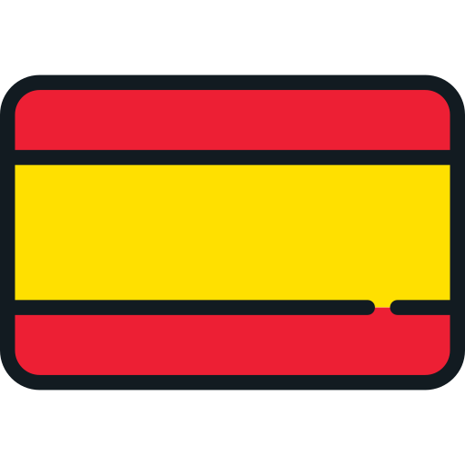

Gruppo di 4 persone più nonni, zii, cugini, cani, gatti.
Non ci siamo scelti infatti ci stiamo spesso un po' tutti sulle palle però dai quanto è bello quando arriva Natale e mangiamo il solito Rostbeef e facciamo il trenino per far nascere Gesù Bambino?

Città simpatica dove c'è il mare, il sole, i cocktail che costano 15 euro.
In questo posto è importante andare a mangiare crudo mare, fittare una barca e fare storie su instagram e passare dal Mercedes a bere il caffè. Ma poi.. qualcuno al Mercedes il caffè l'ha mai pagato? Dubbi.

Gruppo di persone che in modo disperato si è unito per raggiungere un unico obbiettivo comune che è sto pezzo di carta che comunque ci porterà ad una vita di fatiche ma chi siamo noi per giudicare le nostre stesse intelligenti scelte?
Gioie incodizionate ma randomiche di gente che chi cazzo era prima che piombassi in queste città ma che ha sicuramente arricchito la mia life. In questa sezione ci siete voi che vi state chiedendo 'chissà io dove cazzo sto'. State qua. Ma non siete tutti tutti. A quelli che non ho aggiunto voglio dire che vi vu bi comunque.
Secondo l'Enciclopedia Treccani:
In senso ampio, comunità umana, diversamente caratterizzata nelle varie situazioni storiche e geografiche, ma in genere formata da persone legate fra loro da un rapporto di convivenza, di parentela, di affinità, che costituisce l’elemento fondamentale di ogni società.

La maggiore parte di queste persone mi ha salvata da compromettenti condizioni alcoliche, mi ha vista ballare il Taki Taki, ha condiviso la mia passione per il Vermuth e mi ha riportata a casa sotto braccio. Col sorriso.